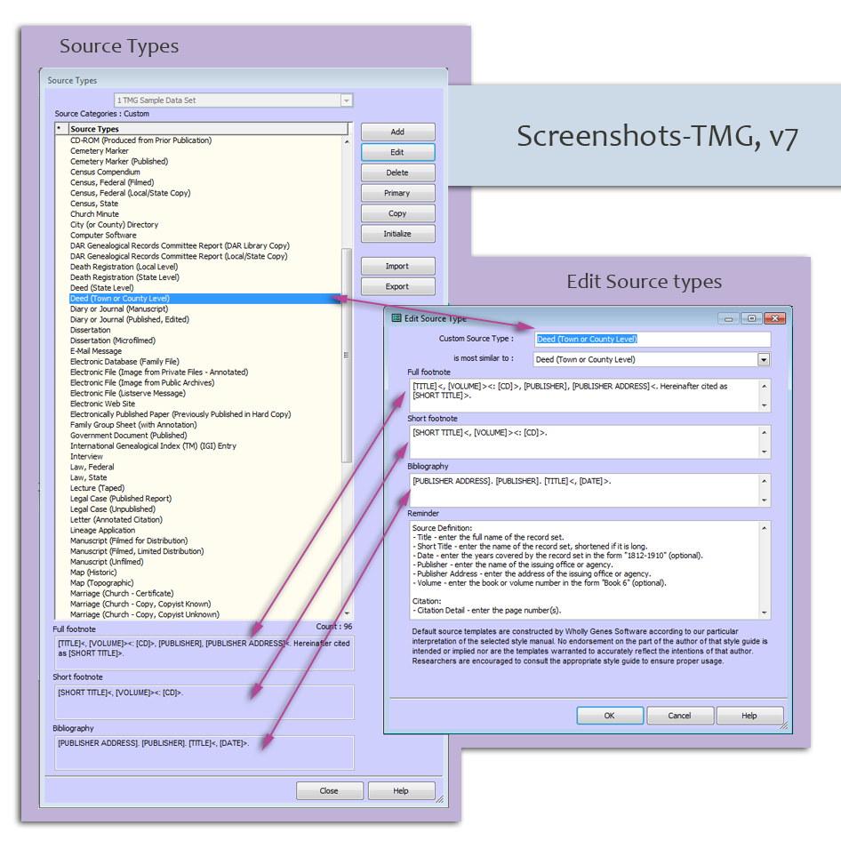
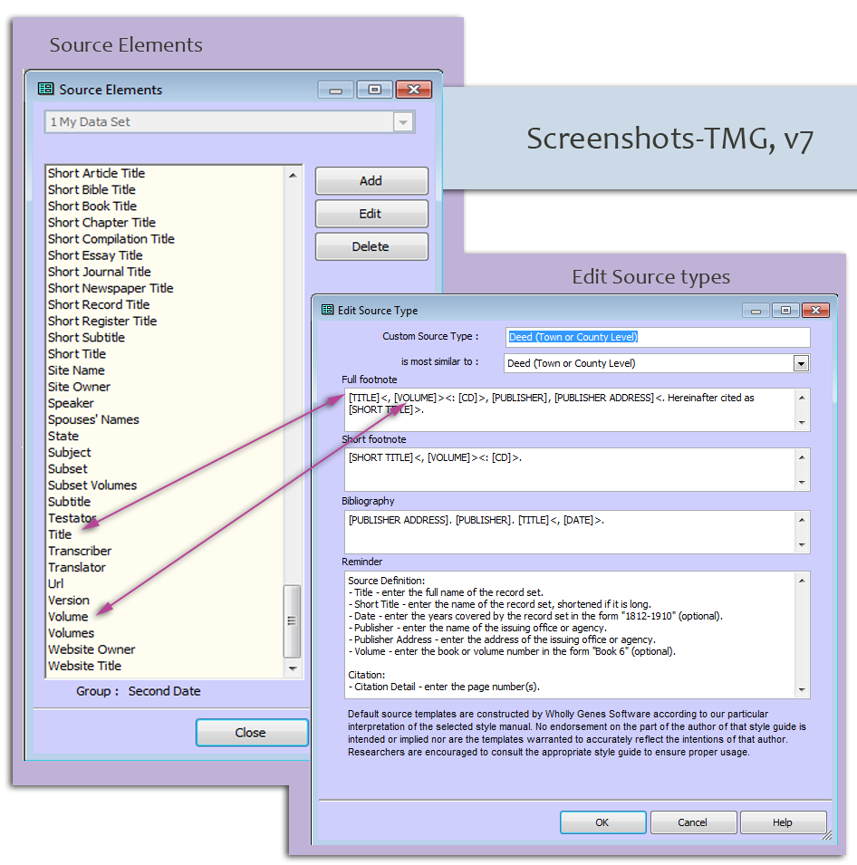
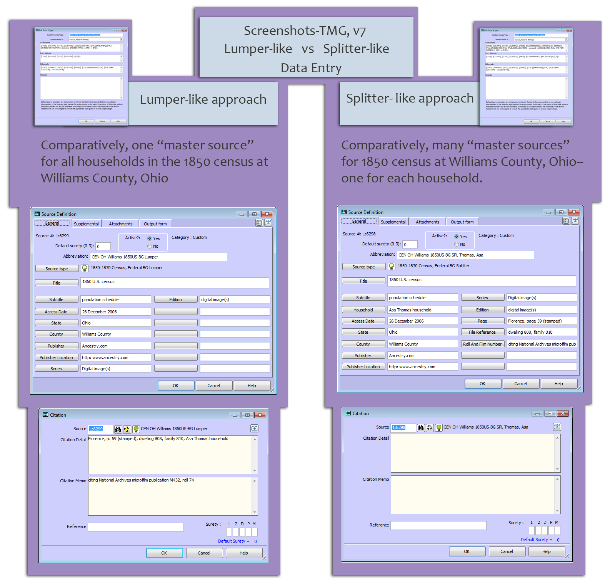
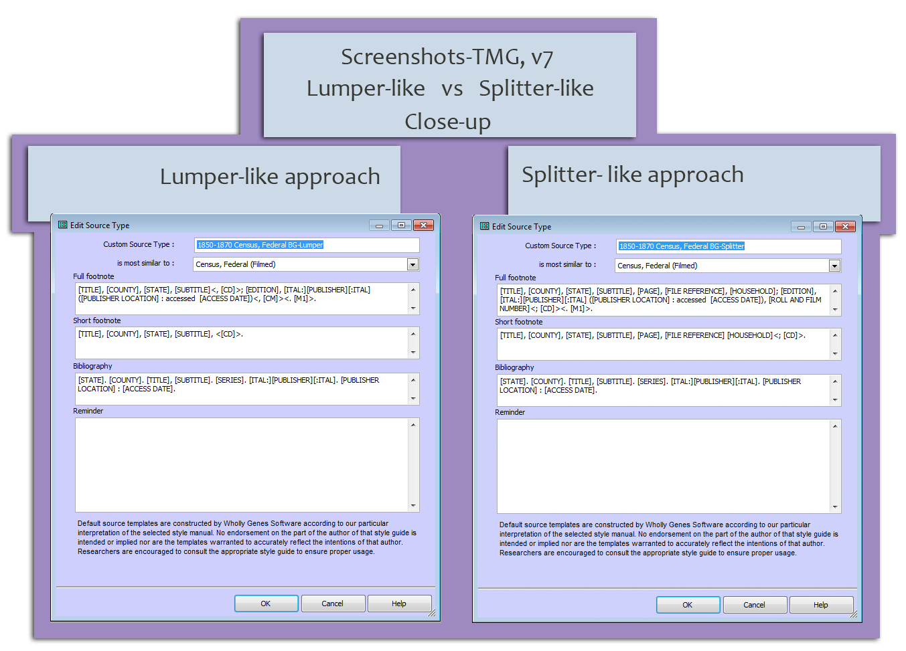

HOME >
EE & GPS Support >
About Citations > Citation Mechanics
The graphics on this page overview parts of the source and citation user interface in
The Master Genealogist v7 and also overview differences in how "lumpers" and "splitters" approach developing the "master source."
Quick Links:
SS1- TMG Source Types and Edit Source Type screens.
Source types define the sets of "Master Source" templates available to a user. Each "Source Type" is associated with a set of three citation templates--full footnote (aka full or first reference note), short footnote (short or subsequent reference note) and bibliography (source list). Each of the templates is built from "Citation Elements" (see the next screen shot).

SS2-TMG Source Elements and Edit Source Types screens
Each of the source type templates is built from "Citation Elements."

SS3-TMG Lumper-like approach vs Splitter-like approach
SS3a-Comparing the templates as two source types

SS3b-Comparing the templates as two source types (close-up)

SS3c-Quick look at data entry (lumper-like vs splitter-like).
The lumper will have fewer "master source" level elements and enter more information in "citation specific fields." (see "citation detail" and "citation memo" below). The splitter will assign more elements at the "master source" level, and enter little (if any) information in the "citation specific fields" (those citation specific fields are empty in the example below.
Both of these template arrangements will produce the same output at the application level.
---